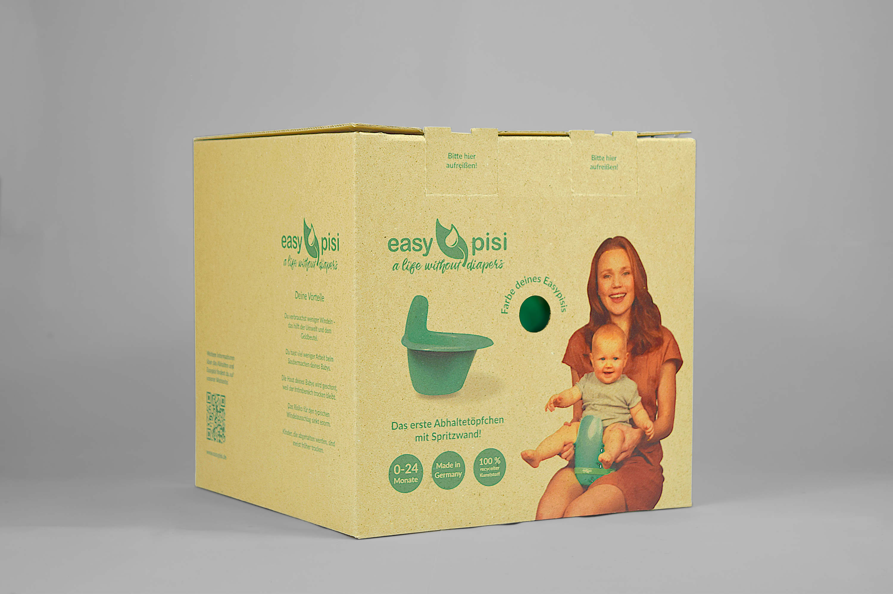

- Die Start-up-Marke Easypisi bietet Töpfchen zum Abhalten von Babys an. In Kooperation mit dem Start-up-Unternehmen habe ich eine Verpackung konstruiert und gestaltet, die sowohl für den stationären Verkauf als auch den Versand geeignet ist.
- Fachgebiet: Verpackungsentwicklung und -design
- Kunde: Easypisi
- Entstehung: Studentische Einzelarbeit
- Datum: März 2022
- Als Konstruktion habe ich den Faltkarton nach FEFCO 0216 mit einem Originalitätsverschluss durch Schließzungen gewählt, um die Verwendung von Klebstoff zu vermeiden. Ein passgenaues Inlay verhindert das Bewegen sowie Verkratzen des Töpfchens im Karton und ermöglicht eine Sortierung von Zusatzprodukten.
